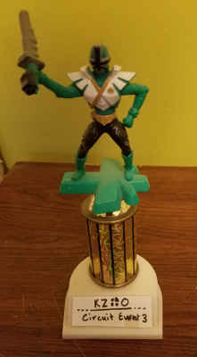
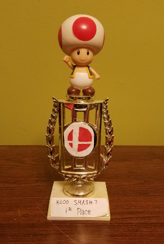

Keifer Lewis
劉 希
I recently graduated from University of Michigan with a Bachelor's in Computer Science. I am interested in Full-stack Software Engineering and have a passion for designing elegant and simple code. I specialize in C++/C, but I am currently taking time to learn more about Web-development!
最近，我在密西根大学毕业。 我学习了计算机科学和中文。 我很喜欢C++/C，可是我想学别的计算机语言。
Experience
经验
Software Engineer
Backend lead for a Spring Boot microservice pilot project that assists auditors via automating document attribute extraction. I am responsible for overseeing the development environment,reviewing pullrequests, assisting in managing an offshore team, and training new hires.
Developed an idempotent document processing pipeline using Apache Zookeeper and Kafka. This pipeline connected to otherinternal APIs that performed zone-based optical characterrecognition.
Participate in an Agile environment which means occasionally assisting on other projects or other areas of the codebase (e.g. frontend) that I am less familiar with. For example, I was responsible for getting another project production-ready by setting up SSL forinter-service communication.
Leverage tools such as Jenkins and Artifactory for continuous integration, ensure code quality with CodeHub pullrequests, and maintain a knowledge-base with Atlassian’s Confluence and Jira.
Cooperate with frontend specialists using Spring Cloud Contracts to ensure consistency between backend endpoints and frontend consumers.
Software Engineering Intern
Worked alongside a team of students and professionals to build a proof-of-concept Android mobile app that allows automotive dealerships to file insurance claims with Ally.
Engineered RESTful calls to both Ally’s existing security token service and a development database. This required learning Ally’s existing systems, multi-threading the app to allow internet connections, and formatting database input/output with JSON libraries.
Contributed to Ally’s data conversion process by refactoring legacy code for performance increases and readability + maintainability improvements.
Admin Computer Support
Support Technician and Helpdesk for the University’s Administration Offices of over 200 employees.
As a student lead, I wrote documentation for new employee onboarding and was responsible for training new student hires.
Responsible for providing professional customer support, troubleshooting hardware and software for computers and printers.
Sponsored Player
Ranked Top 5 in Michigan for five years and community leader for the Super Smash Bros. game Project M.
Responsible for facilitating and growing the Michigan Smash community, and attending tournaments in-state and out-of-state.
Computer Consultant
Desktop Support and Helpdesk for the campus staff.
Responsible for understanding Active Directory, System Center, and imaging computers with Zenworks and Clonezilla.
Peer Tutor
Peer Tutor in both one-on-one and group setting by appointment.
Responsible for helping students learn Algebra, English, and Introductory Chinese.
Education
教育
University of Michigan
GPA: 3.48
Grand Rapids Community College
GPA: 3.73
Skills
能力
Interests
爱好
Aside from working with technology, I love competing in Super Smash Bros. Project M. I was ranked Top 5 in Michigan from 2013-2016. Currently, I have taken a break from competeting and reside on the Michigan Power Ranking Panel where I have been a member for 3 years.
I also enjoy skateboarding and playing Magic the Gathering!
Awards
奖项
Placing some Project M trophies here for fun :)
-
Bronco Smash 1st Place
-
Kzoo Circuit Event #3 1st Place
 -
Kzoo Smash Event #1 1st Place

-
Kzoo Smash Night #9 1st Place
-
Kzoo Smash Night #8 1st Place

-
Kzoo Smash Night #7 1st Place

About
东西
I have deprecated updates to this website as of 2019. I had a lot of fun with this project, but I want to test some new technologies, and I will likely build a new site from the ground up before trying to overhaul what I created here.
I originally used Microsoft Azure to host my server. I hadn't used HTML/CSS/JS since a previous web course, so I wanted to refresh my memory of these technologies. I began by writing an HTML page from scratch. But what I came up with didn't look modern or incorporate responsive design, so I went to some open-source templates for inspiration on how modern webpages look and operate under the hood. The template I picked can be found here.
My branch can be found here. I kept the pieces I liked and tweaked the existing code to learn more about HTML, Javascript, jQuery, and Boostrap. I am currently working on adding easter eggs to the site in order for me to learn some new things. Can you find them all?